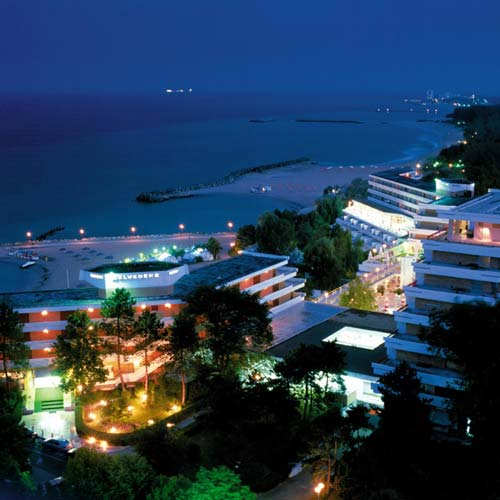
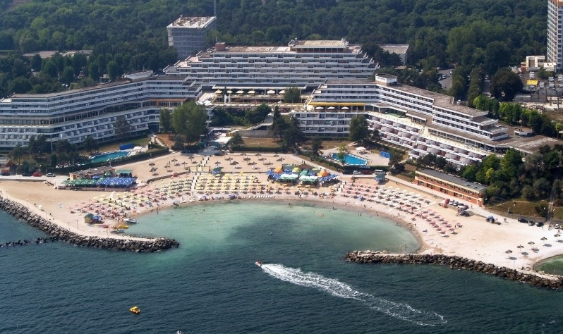
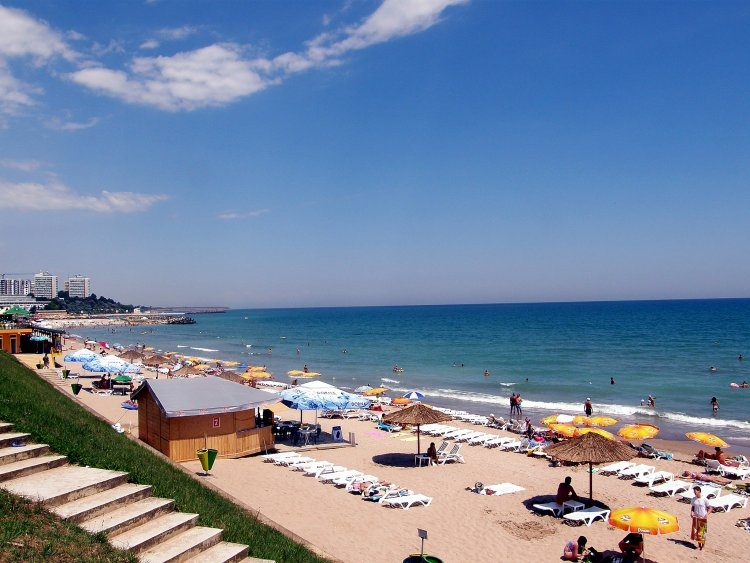

Imagini in direct din statiunea Olimp.
Olimp este una dintre cele şase staţiuni balneoclimaterice de pe litoralul românesc al Mării Negre, situate în arealul Comorova din raza municipiului Mangalia, în judeţul Constanţa.

Staţiunea se găseşte la 7 km la nord de centrul oraşului Mangalia. A intrat în circuitul turistic în anul 1972.
Staţiunea era vizitată mai ales pentru curele heliomarine, pentru tratarea unor afecţiuni reumatismale, ginecologice, posttraumatice, endocrinice, respiratorii, dermatologice.

Deşi Olimpul este doar un cartier (staţiune balneoclimaterică) al municipiului Mangalia, nomenclatorul administrativ al localităţilor o socoteşte (greşit din punct de vedere geografic deoarece staţiunea nu este o localitate permanent locuită) ca fiind un "sat".
În perioada comunistă, această staţiune era foarte scumpă, fiind considerată de lux, rezervată "tovarăşilor" importanţi şi "oaspeţilor de onoare" (de exemplu secretari generali ai Partidelor comuniste occidentale sau intelectuali occidentali comunişti, invitaţi de Nicolae Ceauşescu).

În prezent nu mai este aşa de căutată, iar cei care vin aici caută mai ales liniştea şi relaxarea.
Olimp dispune de o faleză înaltă care oferă o panoramă frumoasă asupra Mării Negre, iar plaja este aglomerata în tot timpul sezonului estival. Plaja staţiunii Olimp are două caracteristici : cea din partea de sud spre Neptun este o plajă îngustă, mărginită de o faleză destul de înaltă.